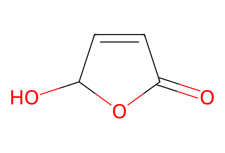
O=C1C=CC(O)O127 molecular records; 20 preparation events; 3 selected paths. Preparative total-synthesis network in Schemes 1-3, from literature starting materials 4 and 13 and supplied allenoate/auxiliary. E/Z mixture, isolated Z branch and convergent reactants retained. Unisolated activation intermediates are operation stages, not invented isolated compounds. Analytical Mosher/Marfey degradation experiments are outside preparative route coverage.
完整 JSON · 逐步 CSV · 路线序列 · SDF · HRMS 核对
| 事件 | 分子连接 | 报告产率 | Canonical reaction SMILES |
|---|---|---|---|
| E01 | 4 → 5 | 5: 93% | O=C1C=CC(O)O1>>CO/N=C/C=C\C(=O)O |
| E02 | 5 → 6 | 6: 85% | CO/N=C/C=C\C(=O)O>>CO/N=C/C=C/C(=O)OC |
| E03 | 6 → 7 | 7: 94% | CO/N=C/C=C/C(=O)OC>>CO/N=C/C=C/C(=O)O |
| E04 | 7 + serine-methyl-ester → 8 | 8: 80% | CO/N=C/C=C/C(=O)O.COC(=O)[C@@H](N)CO>>CO/N=C/C=C/C(=O)N[C@@H](CO)C(=O)OC |
| E05 | 8 → 9 | 9: 71% | CO/N=C/C=C/C(=O)N[C@@H](CO)C(=O)OC>>CO/N=C/C=C/c1nc(C(=O)OC)co1 |
| E06 | 9 → 10 | 10: 78% | CO/N=C/C=C/c1nc(C(=O)OC)co1>>CO/N=C/C=C/c1nc(CO)co1 |
| E07 | 10 → 11 | 11: 60% | CO/N=C/C=C/c1nc(CO)co1>>CO/N=C/C=C/c1nc(CI)co1 |
| E08 | 11 → 12 | 12: 87% | CO/N=C/C=C/c1nc(CI)co1>>CCCC[P+](CCCC)(CCCC)Cc1coc(/C=C/C=N/OC)n1.[I-] |
| E09 | 13 → 14 | 14: 98% | C/C(=C\I)CCO>>C/C(=C\I)CCO[Si](c1ccccc1)(c1ccccc1)C(C)(C)C |
| E10 | 14 → 15 | 15: 54% | C/C(=C\I)CCO[Si](c1ccccc1)(c1ccccc1)C(C)(C)C>>C/C(=C\B(O)O)CCO[Si](c1ccccc1)(c1ccccc1)C(C)(C)C |
| E11 | 15 + allenoate → 16 | 16: 60% | C/C(=C\B(O)O)CCO[Si](c1ccccc1)(c1ccccc1)C(C)(C)C.C=C=C(C)C(=O)OCC>>CCOC(=O)/C(C)=C(C)/C=C(\C)CCO[Si](c1ccccc1)(c1ccccc1)C(C)(C)C |
| E12 | 16 → 17 | 17: 96% | CCOC(=O)/C(C)=C(C)/C=C(\C)CCO[Si](c1ccccc1)(c1ccccc1)C(C)(C)C>>CCOC(=O)C/C(C)=C(C)/C=C(\C)CCO[Si](c1ccccc1)(c1ccccc1)C(C)(C)C |
| E13 | 17 → 18 | 18: 60% | CCOC(=O)C/C(C)=C(C)/C=C(\C)CCO[Si](c1ccccc1)(c1ccccc1)C(C)(C)C>>CON(C)C(=O)C/C(C)=C(C)/C=C(\C)CCO[Si](c1ccccc1)(c1ccccc1)C(C)(C)C |
| E14 | 18 → 19 | 19: 99% | CON(C)C(=O)C/C(C)=C(C)/C=C(\C)CCO[Si](c1ccccc1)(c1ccccc1)C(C)(C)C>>CC(=O)C/C(C)=C(C)/C=C(\C)CCO[Si](c1ccccc1)(c1ccccc1)C(C)(C)C |
| E15 | 12 + 19 → 20 | 66% combined mixture yield | CC(=O)C/C(C)=C(C)/C=C(\C)CCO[Si](c1ccccc1)(c1ccccc1)C(C)(C)C.CCCC[P+](CCCC)(CCCC)Cc1coc(/C=C/C=N/OC)n1.[I-]>>CO/N=C/C=C/c1nc(C=C(C)C/C(C)=C(C)/C=C(\C)CCO[Si](c2ccccc2)(c2ccccc2)C(C)(C)C)co1 |
| E16 | 20 → 21 + Z-21 | 21: 48%; Z-21: 28% | CO/N=C/C=C/c1nc(C=C(C)C/C(C)=C(C)/C=C(\C)CCO[Si](c2ccccc2)(c2ccccc2)C(C)(C)C)co1>>CO/N=C/C=C/c1nc(/C=C(/C)C/C(C)=C(C)/C=C(\C)CCO)co1.CO/N=C/C=C/c1nc(/C=C(\C)C/C(C)=C(C)/C=C(\C)CCO)co1 |
| E17 | 21 → 22 | 22: 99% | CO/N=C/C=C/c1nc(/C=C(\C)C/C(C)=C(C)/C=C(\C)CCO)co1>>CO/N=C/C=C/c1nc(/C=C(\C)C/C(C)=C(C)/C=C(\C)CC=O)co1 |
| E18 | 22 + acetyl-auxiliary → 23 | 23: 40% | CC(=O)N1C(=S)SC[C@@H]1C(C)C.CO/N=C/C=C/c1nc(/C=C(\C)C/C(C)=C(C)/C=C(\C)CC=O)co1>>CO/N=C/C=C/c1nc(/C=C(\C)C/C(C)=C(C)/C=C(\C)C[C@H](O)CC(=O)N2C(=S)SC[C@@H]2C(C)C)co1 |
| E19 | 23 → 2 | 2: 63% | CO/N=C/C=C/c1nc(/C=C(\C)C/C(C)=C(C)/C=C(\C)C[C@H](O)CC(=O)N2C(=S)SC[C@@H]2C(C)C)co1>>CO/N=C/C=C/c1nc(/C=C(\C)C/C(C)=C(C)/C=C(\C)C[C@H](O)CC(=O)O)co1 |
| E20 | 23 + L-citrulline → 1 | 1: 58% | CO/N=C/C=C/c1nc(/C=C(\C)C/C(C)=C(C)/C=C(\C)C[C@H](O)CC(=O)N2C(=S)SC[C@@H]2C(C)C)co1.NC(=O)NCCC[C@H](N)C(=O)O>>CO/N=C/C=C/c1nc(/C=C(\C)C/C(C)=C(C)/C=C(\C)C[C@H](O)CC(=O)N[C@@H](CCCNC(N)=O)C(=O)O)co1 |

O=C1C=CC(O)O1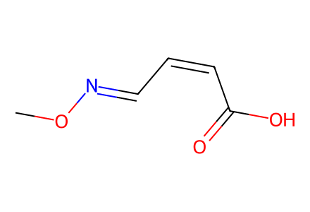
CO/N=C/C=C\C(=O)O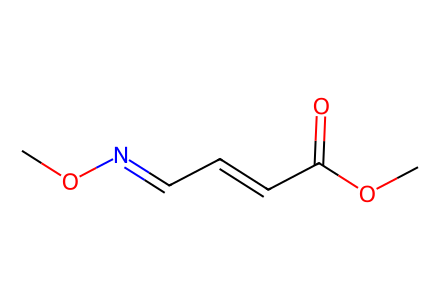
CO/N=C/C=C/C(=O)OC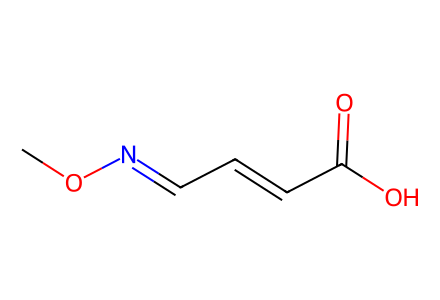
CO/N=C/C=C/C(=O)O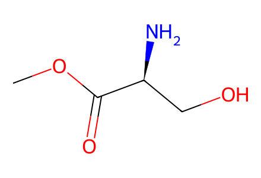
COC(=O)[C@@H](N)CO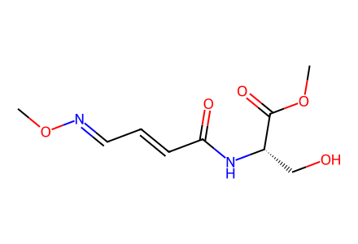
CO/N=C/C=C/C(=O)N[C@@H](CO)C(=O)OC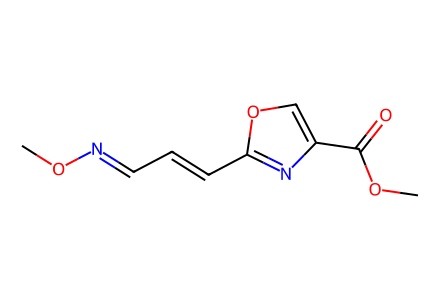
CO/N=C/C=C/c1nc(C(=O)OC)co1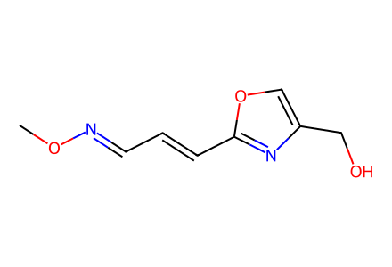
CO/N=C/C=C/c1nc(CO)co1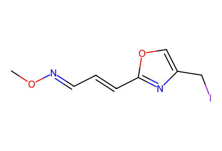
CO/N=C/C=C/c1nc(CI)co1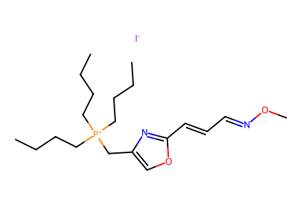
CCCC[P+](CCCC)(CCCC)Cc1coc(/C=C/C=N/OC)n1.[I-]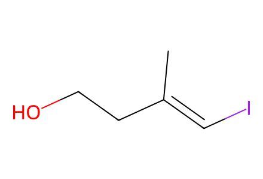
C/C(=C\I)CCO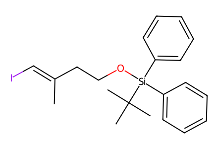
C/C(=C\I)CCO[Si](c1ccccc1)(c1ccccc1)C(C)(C)C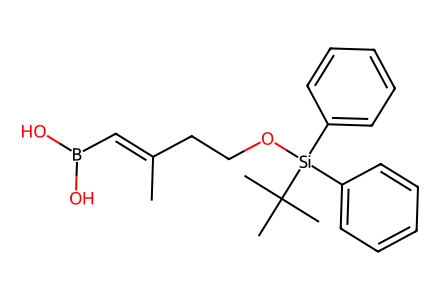
C/C(=C\B(O)O)CCO[Si](c1ccccc1)(c1ccccc1)C(C)(C)C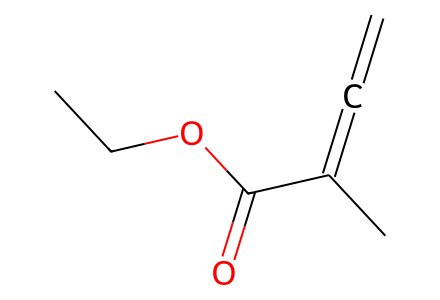
C=C=C(C)C(=O)OCC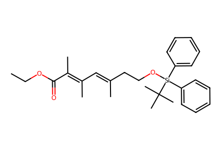
CCOC(=O)/C(C)=C(C)/C=C(\C)CCO[Si](c1ccccc1)(c1ccccc1)C(C)(C)C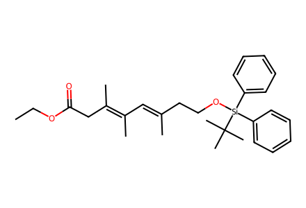
CCOC(=O)C/C(C)=C(C)/C=C(\C)CCO[Si](c1ccccc1)(c1ccccc1)C(C)(C)C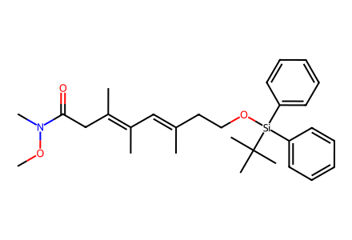
CON(C)C(=O)C/C(C)=C(C)/C=C(\C)CCO[Si](c1ccccc1)(c1ccccc1)C(C)(C)C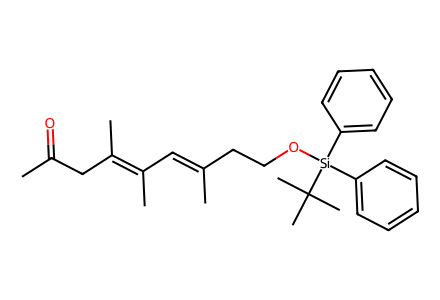
CC(=O)C/C(C)=C(C)/C=C(\C)CCO[Si](c1ccccc1)(c1ccccc1)C(C)(C)C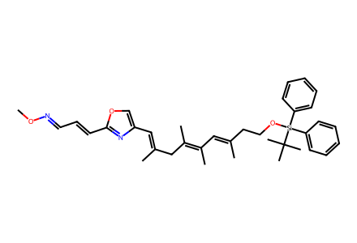
CO/N=C/C=C/c1nc(C=C(C)C/C(C)=C(C)/C=C(\C)CCO[Si](c2ccccc2)(c2ccccc2)C(C)(C)C)co1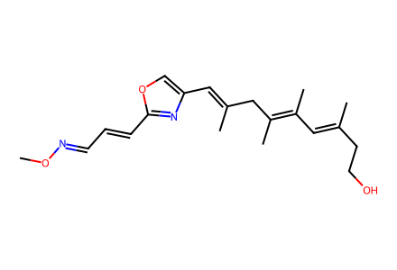
CO/N=C/C=C/c1nc(/C=C(\C)C/C(C)=C(C)/C=C(\C)CCO)co1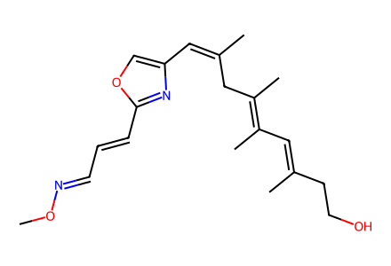
CO/N=C/C=C/c1nc(/C=C(/C)C/C(C)=C(C)/C=C(\C)CCO)co1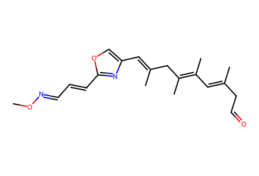
CO/N=C/C=C/c1nc(/C=C(\C)C/C(C)=C(C)/C=C(\C)CC=O)co1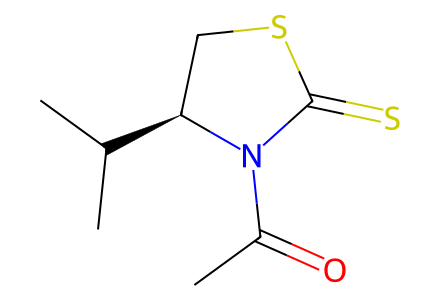
CC(=O)N1C(=S)SC[C@@H]1C(C)C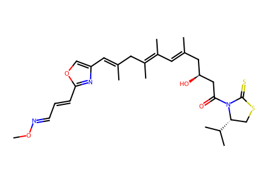
CO/N=C/C=C/c1nc(/C=C(\C)C/C(C)=C(C)/C=C(\C)C[C@H](O)CC(=O)N2C(=S)SC[C@@H]2C(C)C)co1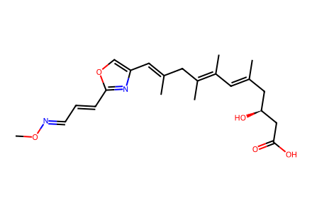
CO/N=C/C=C/c1nc(/C=C(\C)C/C(C)=C(C)/C=C(\C)C[C@H](O)CC(=O)O)co1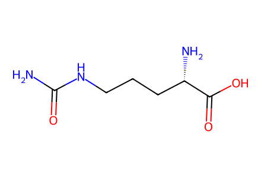
NC(=O)NCCC[C@H](N)C(=O)O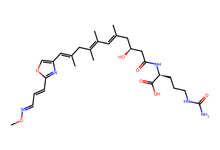
CO/N=C/C=C/c1nc(/C=C(\C)C/C(C)=C(C)/C=C(\C)C[C@H](O)CC(=O)N[C@@H](CCCNC(N)=O)C(=O)O)co1